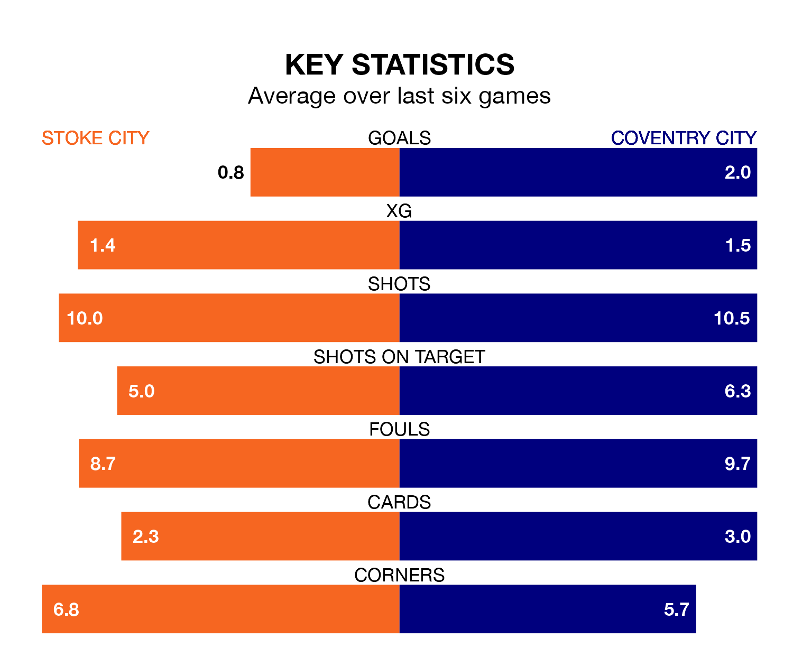

Stoke City host Coventry City on Saturday at the bet365 Stadium in EFL Championship.
In their last league match, on Wednesday, Stoke beat Queens Park Rangers 1-0 at home, with their goal scored by Wouter Burger.
Coventry drew, 2-2 away at Plymouth Argyle, with Ellis Simms and Liam Kitching on the scoresheet.
With 30 goals in 32 games so far this season, Stoke are scoring at below the league average rate with 0.9 goals per game. And they are conceding at an average rate, letting in 45 goals at a rate of 1.4 per game.
Coventry, meanwhile, are above average scorers, with 1.6 goals per game, compared to a league average of 1.4. They have conceded 1.2 goals per game.
In the last 10 years, Stoke and Coventry have played each other on eight occasions. Stoke won one of them, Coventry four, and they drew three times.
On average, the Potters scored 1.0 goal and the Sky Blues 1.1 in those matches.
Their last meeting was on November 11, when they played out a 0-0 draw.
Stoke City are 19th in the table after 32 games, of which they have won nine and drawn eight, earning 35 points.
Coventry City are 13 places ahead of the Potters in sixth, with 12 wins and 12 draws putting them on 48 points.
The hosts are in disappointing form in EFL Championship, with two wins and four losses from their last six games.
With three wins and two draws over that period, the Sky Blues' form is better – they have taken 11 points from 18, compared to Stoke's six.
Updated: 12:06 (UTC), 15/02/24